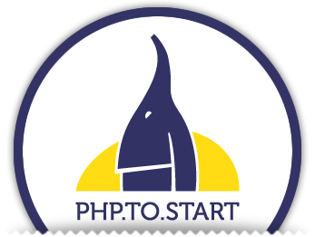

Associazione Gruppo Utenti Sviluppatori PHP Italiani
Indigeni Digitali
PHP User Group Torino
Skuola.net
Associazione Gruppo Utenti Sviluppatori PHP Italiani
Indigeni Digitali
PHP User Group Torino
Skuola.net
presentano

PHP.TO.START
Il PHP come strumento di business - III edizione
TORINO, 29 Marzo 2013
Seguici!
La conferenza
Il PHP.TO.START è una conferenza sull'utilizzo del linguaggio di programmazione PHP in ambito business.
Sono sempre più numerose le start-up e le aziende già affermate che utilizzano il PHP come strumento principale per lo sviluppo di applicazioni web. Più del 35% di tutti i siti internet del mondo utilizza questo linguaggio di programmazione. Il PHP rappresenta un'opportunità per tutte le aziende e il vantaggio competitivo derivante dalla sua adozione ne fa uno strumento strategico di fondamentale importanza per il business.
La conferenza PHP.TO.START vuole essere un momento di incontro per chi utilizza, o vuole iniziare ad utilizzare, il PHP a livello professionale. Per questo motivo abbiamo deciso di invitare professionisti del settore per presentare le ultime novità sul linguaggio e per portare la loro testimonianza nell'utilizzo di questo strumento open source.
Rimani informato ed iscriviti alla nostra newsletter
Programma
| Time | Track 1 |
|---|---|
| 09:00 – 09:30 | Check-in |
| 09:30 – 9:45 |
Presentazione del PHP.TO.STARTPUG Torino - @PUGTorino |
| 09:45 – 10:15 |
API per App: il mobile come frontendFabio Giannese - @ifabioStrategia e sviluppo dell'app di Skuola.net, dal punto di vista del backend di un'interfaccia Mobile. Nel talk si tratteranno anche alcune delle domande che ci siamo posti: Cosa deve fare? Definizione degli obiettivi dell'app e dell'esposizione dei dati. Meglio nativa o HTML5? Differenze di sviluppo tra le due tecnologie. RESTful o custom? Analisi sull'approccio mirato a rispettare gli standard e perché. Come la testiamo? I test automatici a volte non bastano. Reggerà il traffico? Previsioni di carico, distribuzione multi server e caching. |
| 10:20 – 10:50 |
Sviluppare progetti sostenibili con PHPMichele Orselli - @_orso_Fatto: molti progetti web sforano tempi e budget. Fatto: molte delle feature implementate non vengono utilizzate. Fatto: i documenti di mille pagine non rappresentano valore per il cliente finale. In questa presentazione vorrei mostrare una possibile via per lo sviluppo di un progetto sostenibile dal punto economico seguendo un processo di definizione delle funzionalità, prioritizzazione, planning, sviluppo, evidenziando quali strumenti e pratiche mette a disposizione l'ecosistema di php ad oggi in termini di framework e microframework, automazione, definizione delle specifiche di business (bdd). |
| 10:50 – 11:05 |
Coffee Break |
| 11:05 – 11:35 |
Automazione quotidiana in PHPManuel Baldassarri - @k3aL'automazione di procedure ripetitive o di operazioni complesse è una delle chiavi per il benessere del software e dello sviluppatore. Eseguire i test, lanciare una build, fare il check degli aggiornamenti, eseguire il deploy dell'applicazione sono solo alcuni dei task che quotidianamente dobbiamo eseguire. Esiste una miriade di tool che può aiutarci in questo e diversi sono i tool scritti in PHP. E se ce ne fosse uno "diverso"? |
| 11:40 – 12:25 |
The Rocket Internet experienceAlessandro Nadalin - @_odino_In questo talk si presenta come e' stato gestito il reparto tecnico di una delle startup di Rocket Internet basate a Dubai, Namshi.com. Dalla formazione del team, alle metodologie utilizzate, passando per gioie e dolori nell'esperienza da Lead Developer. |
| 12:30 – 13:00 |
Accettare le ereditàGiorgio Sironi - @giorgiosironiÈ bello scrivere solo codice coperto da test automatici, ma a volte ereditiamo codice pieno di valore che non ne ha neanche uno, ne è stato scritto pensando alla sua testabilità. Sfortunatamente, è noto che occorrere rifattorizzare il codice per poterlo testare, ma allo stesso tempo non si dovrebbe cambiare neanche una linea senza avere dei test a supporto. Questa sessione si propone quindi di introdurre pattern sia noti sia originali per supportare il testing di legacy code. |
| 13:00 –14:15 | Lunch Break |
| 14:15 – 14:45 |
Startup e PHP: business scalabile e tecnologie all'avanguardiaGabriele Mittica - @gabrielemitticaUpCloo è una startup diorigine torinese selezionata per un investimento internazionale dall'Oxygen Accelerator di Birmingham edizione 2012. La scelta da adottare PHP ha permesso all'attività di sviluppare il progetto e crescere velocemente. Questo talk mostrerà come unlinguaggio come PHP possa rivelarsi lo strumento perfetto per le startup che vogliono raggiungere rapidamente i propri obiettivi, grazie alla sua elasticità e alla sua facile integrazione con servizi e prodotti cloud based. |
| 14:50 – 15:20 |
PHP per progetti business criticalMarco Zani - @neendatacenterIn questo talk verranno presentate le caratteristiche di un progetto business critical e come soddisfarle utilizzando un'infrastruttura PHP. Le necessità durante la fase di sviluppo, il time to market e la qualità del codice. Un ambiente di produzione che garantisce un deploy più veloce e con garanzia di consistenza e facili roll back. Alta affidabilità in produzione, garanzia di uptime sia a livello infrastrutturale che applicativo. Performance e scalabilità, con strumenti di monitoraggio e misurazione. Evidenzieremo come queste necessità possano essere pienamente soddisfatte da PHP, attraverso l'uso di Framework, opportune metodologie di sviluppo e adeguati ambienti e soluzioni sistemistiche. Presenteremo infine due casi reali di progetti business critical sviluppati in PHP e mantenuti in infrastrutture ad alta affidabilità. Il primo sviluppato in Symfony (UCI Cinemas), il secondo sviluppato in Zend Framework (Morellato). |
| 15:20 – 15:35 |
Coffee Break |
| 15:35 – 16:05 |
Scalabilità ed alta disponibilità con PHP e sistemi cloudWalter Dal Mut - @walterdalmutDurante il corso della presentazione sarà mostrato come realizzare un'infrastruttura scalabile che ruoti intorno a PHP come strumento centrale di business col fine di realizzare un'infrastruttura distribuita geograficamente che permetta scalabilità ed alta disponibilità grazie alle nuove tecnologie di Cloud Computing. La presentazione prevede di far capire l'intero processo di deploy e come il PHP è fondamentale per restare agili nonostante un'infrastruttura complessa. |
| 16:10 – 17:05 |
PHP e RedisAntonio De Patto - @depalopApprofondimento su una delle tecnologie più interessanti da affiancare a PHP nella produzione di applicativi scalabili e di ultima generazione: Redis. Il talk sarà strutturato in due parti: una prima metà introduttiva su Redis e le potenzialità che questa tecnologia offre nell'integrazione con PHP e case study sul suo utilizzo. La seconda parte mostrerà la semplicità di utilizzo con PHP, gli strumenti a disposizione dello sviluppatore e alcuni esempi pratici di integrazione con applicativi PHP (Caching, JobQueue, Sessions, Messaging). |
| 17:05 – 17:15 | Chiusura |
Registrati
Location


- Event location
-
c/o I3P
Incubatore di Imprese Innovative del Politecnico di Torino
Via Pier Carlo Boggio 59
10138 Torino - Dove mangiare
- Ristoranti
- Come arrivare
- Trasporti
- Dove dormire
- Alberghi
In auto
Dall'autostrada, seguire le indicazioni per il centro.
In città, seguire le indicazioni per il Politecnico o la stazione Porta Susa o il Tribunale (palazzo di giustizia).
Dal Politecnico: avendo l'entrata principale alla propria destra, proseguire su corso Duca degli Abruzzi, svoltare a destra al primo incrocio con semaforo, su corso Peschiera. Svoltare poi a destra al secondo semaforo, per corso Ferrucci e infine prendere la prima strada a destra.
Da Porta Susa: avendo l'entrata principale a destra, proseguire fino alla fine di corso Bolzano. Svoltare a destra su corso Vittorio Emanuele II e proseguire per 350m verso il Tribunale.
Dal Tribunale: di fronte l'entrata, in corso Vittorio Emanuele II, svoltare su via Borsellino, verso il Museo del Carcere, e proseguire sulla stessa strada.
In treno
Dalla stazione di Porta Susa sotterranea (Frecciarossa): uscire verso corso Inghilterra. Proseguire verso corso Vittorio Emanuele II. Arrivati di fronte al tribunale, girare a sinistra, su via Borsellino. Proseguire lungo la strada.
Dalla stazione di Porta Susa (piazza XVIII Dicembre): Bus 56, direzione Tirreno, 10 fermante. Proseguire in direzione dell'autobus fino all'incrocio e girare a sinistra, su via Fratelli Bandiera. Alla fine della strada, girare a destra.
Dalla stazione di Porta Nuova:
- Bus 68, direzione via Frejus, 5 fermate. Di fronte al Tribunale, girare a sinistra e proseguire su via Borsellino.
- Tram 9, direzione Stampalia, 5 fermate. Di fronte al Tribunale, girare a sinistra e proseguire su via Borsellino.
- Bus 33/, direzioni Partigiani, 8 fermate. Su corso Ferucci andare a sinistra, poi la prima strada a destra.
In aereo
Aereporto di Torino. Di fronte l'uscita degli arrivi, prendere l'autobus Sadem per Torino. L'autobus ferma a Porta Susa (piazza XVIII Dicembre) e Porta Nuova. Seguire le indicazioni "In treno".
Pernottamento
Consigliamo di prenotare presso l'Hotel Residence Sanpaolo. L'albergo è a poche centinaia di metri dall'I3P, offre WiFi gratuito, colazione a buffet e parcheggio.
Contatti:
Hotel Residence Sanpaolo
Via Spalato 7, 10141 Torino
Tel +39 011.3853953
Fax +39 011.3352880
info@sanpaolo-to.com
Sponsorizza
Un grande evento è fatto anche di grandi sponsor, perchè quindi non sfruttare l'occasione e contribuire alla conferenza?
Contattaci per chiederci come sponsorizzarci!
Gold
€ 1000 + iva- Banner sul sito
- Pubblicità nelle comunicazioni pre-evento
- Autorizzazione a portare pubblicità e gadget (ie. volantini, adesivi, magliette)
- Presenza logo sul programma stampato
- Potete posizionare il vostro flyer nella sala
Silver
€ 500 + iva- Banner sul sito
- Pubblicità nelle comunicazioni pre-evento
- Autorizzazione a portare pubblicità e gadget (ie. volantini, adesivi, magliette)
- Presenza logo sul programma stampato
Bronze
€ 300 + iva- Banner sul sito
- Autorizzazione a portare pubblicità e gadget (ie. volantini, adesivi, magliette)